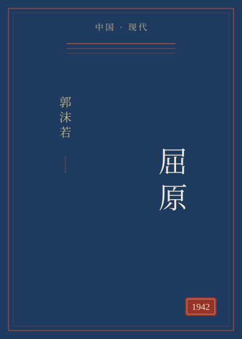
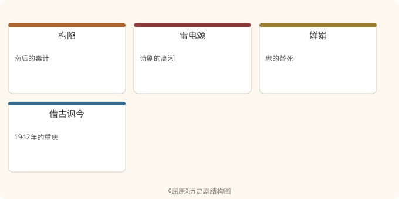

屈原
一、基本信息
| 作者 | 郭沫若 |
|---|---|
| 成书/出版 | 1942年（作者页 B207 口径：major_works 载'屈原（历史剧）'——1942年说通说待核） Guo Moruo — Encyclopaedia Britannica（百科全书） |
| 国别/地区 | 中国 |
| 时代 | 现当代 · 现代 |
| 体裁 | 历史剧 |
| 语言 | 汉语（白话·诗剧） |

《屈原》历史剧结构图（主题·结构图）
二、创作背景
作者页（B207）：郭沫若 major_works 载'屈原（历史剧）'（B207 作者页定位，详见 nvshen 条核对）。
题材（通说待核）：以《史记》屈原事迹为骨——'雷电颂'的爆发的五幕历史剧。
三、内容脉络
屈原被谗放逐：南后的构陷、婵娟的忠、'雷电颂'的独白（通说待核）。
四、主要人物表
| 人物 | 身份 | 说明 |
|---|---|---|
| 屈原 | 诗人·三闾大夫 | （通说待核） |
| 婵娟 | 侍女 | 虚构人物（通说待核） |
| 南后郑袖 | 后妃 | 构陷者（通说待核） |
五、主题与艺术特点
- 借古讽今：皖南事变语境（通说待核）。
- '雷电颂'的诗剧高潮（通说待核）。
- 历史剧'古为今用'（通说）。
六、影响与评论
- 作者页：郭沫若历史剧代表作（B207 作者页口径）。
Guo Moruo — Encyclopaedia Britannica（百科全书） - 作者页：郭沫若'在每个文类上都极其多产'（B207 作者级定位）。
Guo Moruo — Encyclopaedia Britannica（百科全书）
七、阅读建议
难点
- 战时重庆语境。
- 历史与虚构的比例。
- 《屈原》（人民文学出版社《沫若剧作选》，通说待核）。
对照《虎符》《棠棣之花》（通说——郭沫若历史剧系列）。
八、待核实
- 1942年重庆首演（中华剧艺社说）核对。
- 婵娟虚构人物确认。
- '雷电颂'原文核对。
本页主要来源
郭沫若的其他收录作品：女神